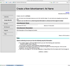
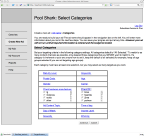
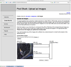
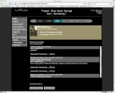
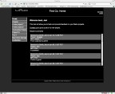
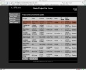

Introduction
A portfolio is a funny thing. As a contractor I spent years constantly on the lookout for the next job. And amassing a portfolio of software projects was a key part of that. In 2007 I went to work full time for a company called NeuroPace, a pre-IPO medical devices company. I was working on a project that was sufficiently secret that they asked me to make my resume less specific. I stayed there for nearly 10 years, and in that time my portfolio stopped being a focus. NeuroPace did not allow internal tools to be open sourced and I was working too much to pick up much work on the side.
My current portfolio consists of presentations I've made, a few pieces of example code which I built for EMOTIV, a couple of projects written by bootcamp students whom I mentored, and descriptions of some very old projects which have not survived the ravages of internet time.
Presentations
In May 2019 I spoke at Pioneers'19 on "Neurotech at Scale: Advancing Brain Science with Big Data". The entire presentation is up on YouTube.
In October 2019 I was asked to be an industry delegate at the Global Neuroethics Summit . At the time, I knew very little about the topic so I gave a presentation about the ethical and compliance questions that practitioners encounter in the field. And then I asked them for guidance. It was well received, if perhaps not exactly expected.
I never actually gave this Active Resource presentation that I put together for sd.rb. But I have the slides, so I figure I ought to get them out there. Incidentally this talk covers ActiveResource as it existed in edge rails in March 2007, so the information is pretty dated.
Intermediate Photography : or what the other buttons do was given at Bar Camp San Diego in June 2007. As it turns out, the crowd was mostly advanced photographers, but we had a good time anyway.
Coder Yoga was given at BarCampLA-2. The slides are very bare-bones, but they list quite a few stretches that can be done at (or near) your desk. Mostly I wanted to post these slides because Cory Doctorow mentioned this talk on Boing Boing.
Sample code
Cortex v2 example contains example code for working with the EMOTIV Cortex API. I was initially responsible for the python example.
Music Genius was a project built by three interns from the LEARN academy . Over the course of four weeks under my tutelage they built a web application in React to control a Spotify playlist with an Emotiv EEG headset.
EmoSphero was a project built by two interns from the LEARN academy . Over the course of four weeks I mentored them through building a web application in React and Electron to control a Sphero with an Emotiv EEG headset.
Expired Projects
Strongwiki solved a problem that I had been contemplating for years. How can I carry around a little bit of encrypted information that I can decrypt and view on any computer, anywhere? I hit on an answer in 2006 and built Strongwiki -- a javascript wiki with built-in strong encryption. With the wide availability of tools like LastPass, OnePass, and DashLane this seems obvious, but at the time I was pretty proud of myself. I borrowed the javascript file storage code (before the localStorage API) and build tools from TiddlyWiki, the encryption code from JavaScrypt, and the the markup from Showdown . A little lightbox magic and some prototype and StrongWiki was born. The project was open source and hosted by WiseGEEK.com. Sadly, WiseGEEK has since changed hands and the source repository was lost.
Trabian is a Rails shop that specializes in content management systems for Credit Unions. They contracted me to create a polling plugin for Mephisto (which their CMS is based on). I did it, they were happy, but I never heard whether or not it was made public.
Adhoc Mobile needed an administrative area to create and publish advertisements on their network of mobile applications. They had built the back end as web services using J2EE and SOAP, and my project was to use those services to add advertisements into the system. I chose Rails and Prototype/Scriptaculous to implement everything as an opportunity to delve into ActiveResource (which was beta at the time).
  {kind=link}
{kind=link}
{kind=link}
Mabo Studios specializes in outsourcing architectural rendering to China. They needed a site where their customers and vendors could see the progress of their projects. The site uses Ruby on Rails and is my first journey into the joy that is programming Rails. This is also the first project on which I flew entirely solo.
  {kind=link}
{kind=link}
{kind=link}
Convisia Design Collaborator is a Java thick client app for shared markup of blueprints, medical imaging, or anything else. It was built using JBoss on the backend and communicating via JMS to the Swing client. Most of my work was on the front end, but I did a bit of hacking on the server side as well. Learned a lot of Swing tricks and really got my head around the whole model-view-controller pattern on this project.
Sora City is a cell phone / flash game written in Java and based on a platform called the BEAST. The BEAST was a Java project that I had the pleasure of designing, managing, and coding (at various points). The team was amazing and the concept was fascinating. It consisted of a customizable event engine that allowed characters to participate in events while the users were offline. The results of the events were presented to the users in a blog format whenever the user checked in on his phone or via a flash interface. It was a fascinating idea that never quite made it due to a variety of business difficulties (dealing with cellphone carriers is unpleasant).
Fun Stuff
Google Sans About A friend was complaining about about.com search results polluting his searches. So I built a little firefox searchbar plugin that doesn't return anything from about.com. Easy enough, and it made his life a little better!